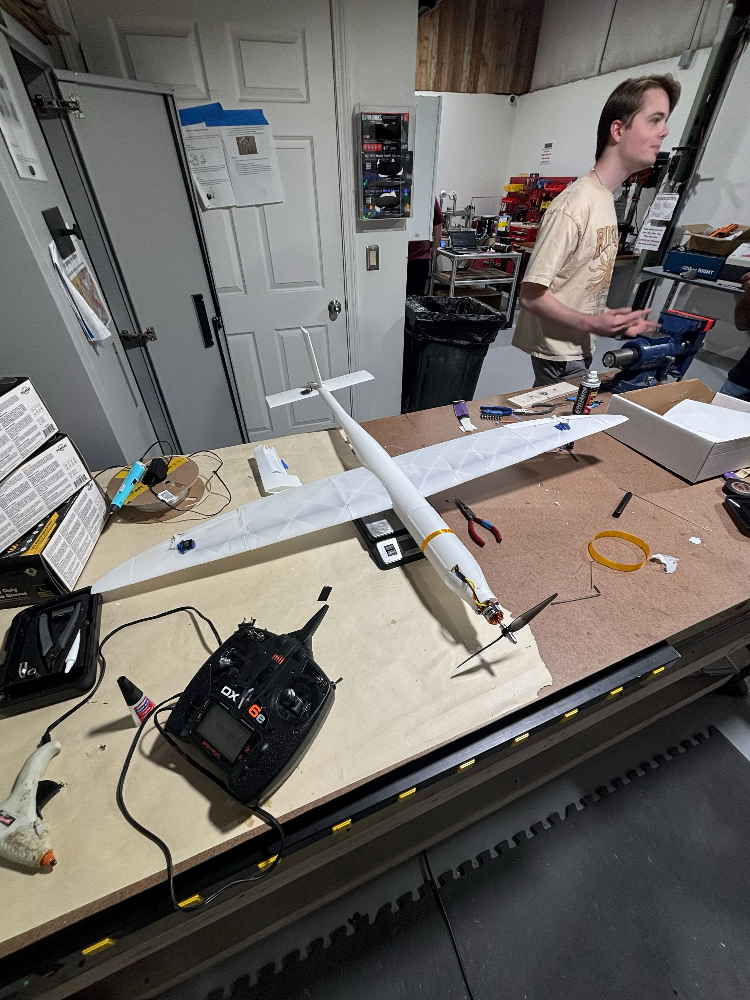

3D-Printed Aircraft
Project Flying Carpet
An extremely lightweight aircraft manufactured, processed, and assembled part by part for competition at University of Texas, Arlington. Going through 3 iterations and 7 total planes, all 24 plane parts are printed using a special variation of filament, LightWeight PLA.
The scope of the project was to print a competition ready plane to participate in competition hosted by University of Texas, Arlington. The goal is to maintain air time for as long as possible after 8 seconds of powered flight.
The plane is a conventional body plane featuring a pull propeller. The final iterations of the plane resulted in the measurements of: wingspan is 3.94 ft, the aspect ratio is 8.94, and the dihedral is 3 degrees. The fuselage length is 3.12 ft and the nose length is 11.25 inches. Final weight was measured to be 580g. For the final competition iteration of the plane, the plane features two distinct printing processes. For load bearing section such as the fuselage, conventional printing methods were used. For the wings, a vase mode approach was used, reducing the weight of the wings by up to 40%. The printers used were: Bambu Lab P1S, Creailty CR-30 and Creality K2 Plus.

Four supplied STL parts are rendered from the actual model geometry. The middle-body 3MF is included with the project files.